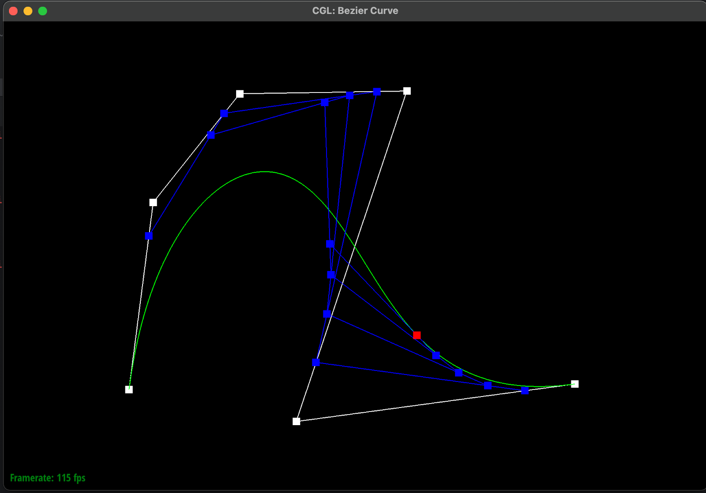
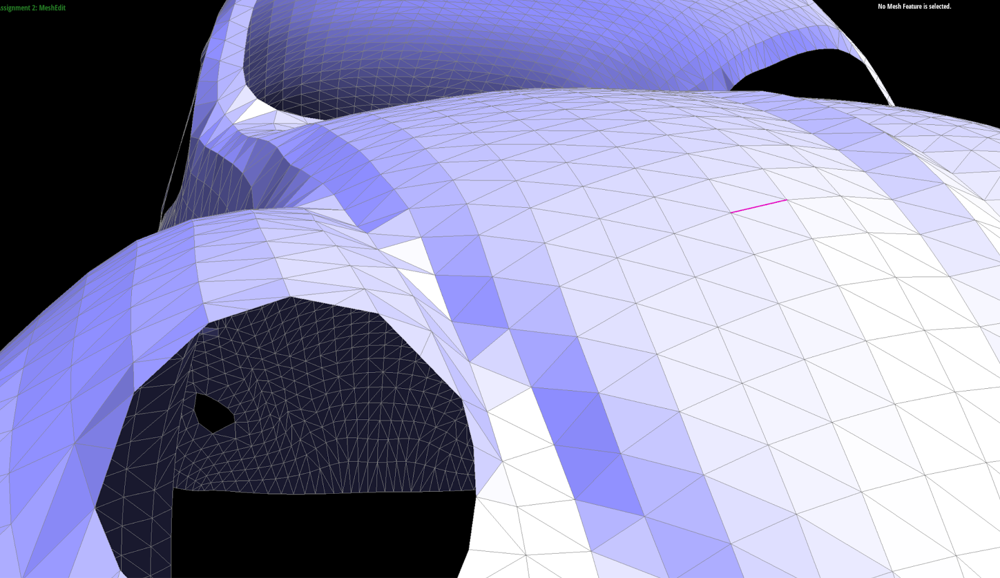

In this homework, we've explored bezier curves and triangle mesh operations. We implemented bezier curve drawing and then worked on the half-edge data structure. We built up to mesh upsampling by implementing edge splitting and flipping. This project is helpful in getting familiar with curves and surfaces and common data structures/operations for manipulating the triangle meshes.
Section I: Bezier Curves and Surfaces
Part 1: Bezier curves with 1D de Casteljau subdivision
De Casteljau’s algorithm is used to generate intermediate and final points for Bezier curve. Given n control points and parameter t, it works by iteratively generating n-1 intermediate points until n - 1 = 1, which is the final point given t. Each intermediate point is generated using linear interpolation between two adjacent points in the previous iteration with the same parameter t. The final curve is the continuity of the final control point with parameter t in [0, 1].
We implement evaluateStep function by iterating the first n-1 points in the array. For each point, we use linear interpolation between the current point and the next point, and push the generating point into the result array. After one iteration, we return the result array.
Screenshots
Iteration 0.
Iteration 1.
Iteration 2.
Iteration 3.
Iteration 4.
Iteration 5.
Final curve.

Moving control point.
Part 2: Bezier surfaces with separable 1D de Casteljau
De Casteljau’s algorithm is extended to bezier surface given a list of nxn control points and two parameters u, v. We implement the evaluation function by first iterating through lists of row coordinates vector. For each vector, we find the bezier points given the parameter u. After each row vector, we get a list of beizer points. Then we find the beizer point given parameter v.
Screenshots
Bezier surface teapot
Section II: Triangle Meshes and Half-Edge Data Structure
Part 3: Area-weighted vertex normals
First, we initialize the normal of this vertex to be zero. For each vertex, we start by getting the twin of the vertex’s half edge. We then get all three vertices of the triangle this half edge (the twin that is) is a part of. We get the normal of this triangle by calculating the cross product vector, given by cross(p1-p0, p2-p0). Then, we find the area of this triangle using ½ * normal.norm(). We add area * normal (normal of the triangle weighted by its area) to the zero initialized vertex normal. We repeat the above steps for all three triangles around the vertex, by moving to the next triangle’s half edge using ->next()->twin().
The vertex normal variable now contains the sum of each triangle’s normal weighted by that triangle’s area. We then return the normalized form of this vector using .unit()
Screenshots
Flat shaded.
Phong shaded.
Part 4: Edge flip
We sketched out how the half edges change position, and then guided our code based on this sketch.
The half edge and its twin originally start from vertex B and C respectively. We use the setNeighbours function to set the source vertices to instead be D and A respectively. Similarly, we also set the correct next half edge. The split causes DB and AC to be the next half edges respectively of DA and AD. Similarly, the half edges corresponding to the sides have to be set correctly, as the split removes half edges BC and CB. For the half edges corresponding to the sides of the quad, only the next edge and the face have to be set, the rest remain unchanged.
Finally, we change the half edges of the faces to the flipped half edges, and set the half edges of the vertices to their corresponding new half edges.
Screenshots
Before flips.
After flips.
Debugging
We spit out all the half edge, vertex and face information to aid with debugging in conjunction with the UI. The UI helped visualize while the debug prints gave deeper info on the underlying representation
The main issue we faced was that every 3 flips, one of the faces would simply disappear. The face would reappear after the next flip. After some debugging we found out that we were not resetting the half edge pointer for the two faces, because the first, and every 3rd flip after that would potentially cause some faces to point to the same half edge (because flipping changes the edges of the triangles). Assigning the right pointers explicitly to the half edges fixed this bug.
Part 5: Edge split
We follow the same methodology as above: sketch out the details first, then proceed to implement the written operations.
No deletions are required, we simply turn the original half edge/edge into the top halfedge/edge. We only have to create new edges, half edges, faces and a vertex. Additionally we have to modify the existing half edges, vertices and faces.
For ease of implementation (especially for extra credit) and for debugging, we split the code conceptually into 3 stages: common, top face and bottom face. Common contains the code that is common for both top and bottom faces, and so on. Each stage is further divided conceptually into 3 steps: get, create, update. In the get stage, we save pointers to the required original information, such as the initial half edges, faces, vertices, etc. In the create stage, we create the new faces, edges, half edges and vertex. Finally in the update stage we set the right half edges, next half edges, vertices, etc.
Extra credit
Using the abstraction above, handling boundary edges becomes straightforward. As we observed, boundary edges split across only one face. One edge is split into three instead of four, and one face into two faces instead of four. Using the is_boundary on the halfedge and its twin, we identify whether it is the “top” face or the “bottom” face that should be split on (depending on the orientation of the half edge corresponding to the edge). Then, we simply disable the parts of the code (using conditional statements) corresponding to creating/updating pointers specific to the face that is not required. The only difference however, is in assigning the neighbours of the half edges that are on the boundary face (aka the twins of the half edges of the edge being split). These half edges will need to be set to have the boundary face as its face, and its neighbour being the next corresponding boundary half edge.
Screenshots
No splits.
Only splits.
Splits and flips.

Boundary splits (extra credit).
Part 6: Loop subdivision for mesh upsampling
We implement loop subdivision by first by calculating the new vertices position for all the old vertices by equation specified in specs, and calculating the position for newly generated vertices and store them in the edge’s newposition field. After that, we perform splitedge and flip all the newly generated edge that connect one old vertex and one new vertex. At the end, update all the vertices to their new position.
Since we need to track what vertices and edges are newly generated, we customize the constructors for Vertex and Edge class to set isNew field to always true upon initialization. During the old edge and vertices traversal, we manually set isNew to false so that during flipEdge we don’t need to flip the newly generated edges. We also add one more field needFlip indicating that the edge that cuts the triangle instead of the edge that is spiltted by the original edge. After splitting, we only test the edges that have needFlip set instead of isNew.
Take icosahedron/input.dae as an example, loop division will split every triangle into 4 equal triangles. Sharp corner and sharp edges will be smoothed out because the updated vertices is the average of surrounding vertices. Pre-splitting edges will reduce the average effect since the new generated vertices is closer than the original vertices therefore the new averaging is closer to the original point. The example is the middle point, when pre-splitting the connecting edges, the point after loop division is closer to the original point (value in the y_axis).
Before.
After.
Pre splitting.
After.
Screenshots
Without pre splitting
With pre splitting
Extra Credit
We implement loop division with boundary. We use different vertices update rules for boundary points. Specifically, for old boundary points, we first bound two neighbors A, B with whom the connecting edge is the boundary edge. And we update positions as follows:
V' =1/ 8 (A+ B) + 3/4 V
For new generated points along the boundary edge, we only take the middle points of two vertifces on the edge.
Screenshots: boundary vertices updated as expected